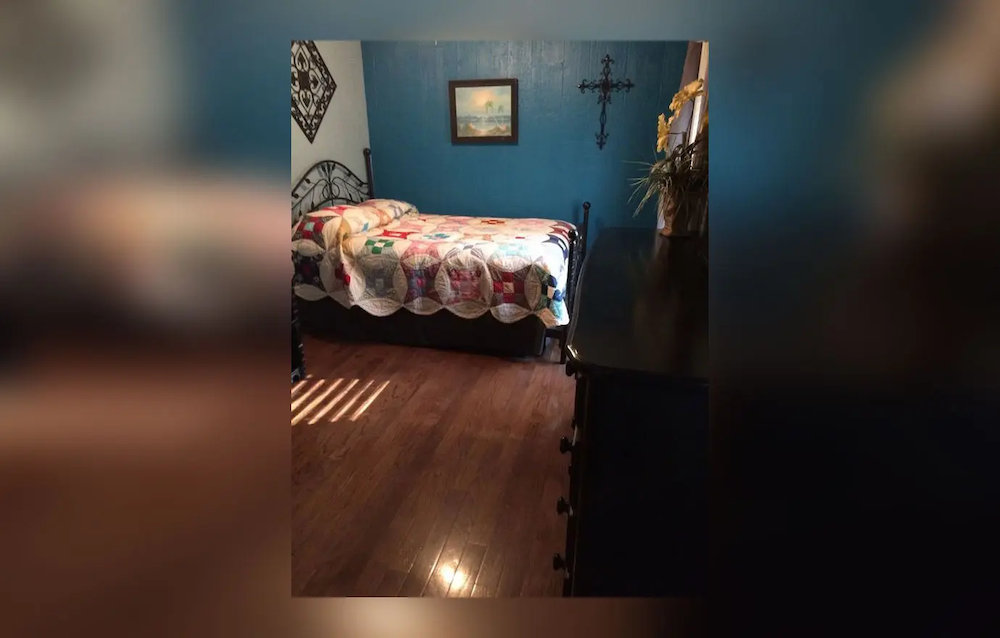
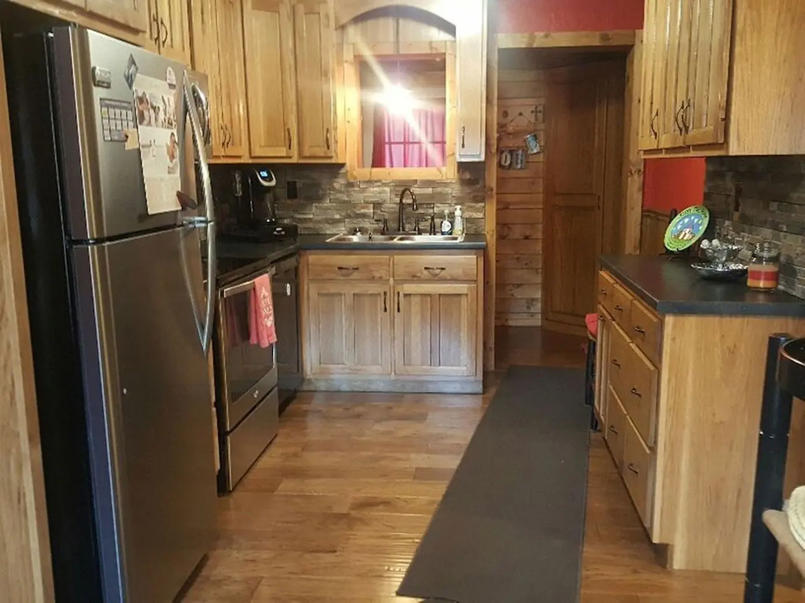

This is the geographic story of Holly's abduction, told through cell tower pings, phone records, testimony, and physical evidence introduced at the trial of Zach Adams.
↳ This timeline is under construction. In the meantime, the most up-to-date plain txt version of this timeline can be found here.
Link to most up to date, work in progress timeline of Terry Britt's history of kinapping and aggravated rape can be found here.
2007 / 2008: While off-duty, John Walker, finds a decomposed body floating at the Tennessee River near I-40 Bridge partially kept afloat by intestinal gases. Walker calls police to report the incident.
This real incident is later incorporated by Jason Autry into his fabricated trial testimony as the disposal plan for Holly's body.
Jan 2011: Three months before Holly's abduction, Britt's computer conducts searches across multiple sites including video.xnxx.com and nudevista. Searches include multiple searches for:
Feb / Mar 2011: Holly and her cousin Natalie are shopping at Dollar General in Parsons. Natalie reported Britt was present and staring at them, creeping her out.
Natalie told investigators that Britt was staring at them and it creeping her out.
Britt later denies being there but bank statement showed a purchase of just over $10 at Dollar General in Feb 2011.
Feb / Mar 2011: Terry and Janet Britt attend a house party hosted by a mutual acquaintance of Natalie Bobo.
Mar 11, 2011: Approx one month before Holly's abduction, Terry and Janet Britt purchase untraceable prepaid "track phones" from Walmart.
Approx 2-3 weeks before the abduction: At least 8 women report being stalked by Terry Britt. Most had blonde hair and blue eyes.
Apr 4, 2011: Zach Adams is arrested by park rangers at Natchez Trace State Park on drug and assault charges.
Apr 6, 2011: Billy Bell confirmed Zach's truck was at Betty's house from Apr 6 onward, and was still there on Apr 13, 2011, corroborating the fact that Zach's white Nissan truck was not available to him the day Holly was abducted.
Apr 9, 2011: The world's largest raccoon hunt took place in Decatur County in the weeks before Holly's abduction. Holly attended with her friend Candace Wood.
At the hunt, Candace noticed a man watching Holly. After the abduction, Candace reported this and worked with TBI on a composite sketch.
Shortly after the sketch was produced, Karen Bobo showed Candace a photo of Shayne Austin.
Critical problem with the Shayne ID: In April 2009, Shayne had suffered a severe motorcycle crash that crushed his orbital socket and caused nerve damage to his eye, leaving him with a permanent drooping eyelid.
Rita Austin (Shayne's mom) attended and later confirmed she did not personally see Shayne at the Coon Hunt.
Holly Bobo, Jason Autry, and Shayne Austin are all related; some of the Austin family visited Jason Autry in prison regularly.
Apr 11, 2011: Two days before Holly's abduction, Britt adds 2x 1,000 minutes to the track phones purchased in March 2011.
Drew Scott calls his supervisor Richie Pratt to ask whether Richie would be going turkey hunting with him and his dad the next morning.
Evening: Shayne Austin spent the evening drinking and playing cards. His parents drove him (as was their regular routine) because, after Shayne totaled his truck, Rita took his keys and Shayne had no other working transportation of his own.
7:00 / 8:00 PM: Dylan was at Zach's house the night of Apr 12, 2011. Autry came over around 7:00 or 8:00 PM.
During Dylan's 2014 coached interrogation with Dennis Bejamin:
Holly and Drew Scott exchange texts through the night of Apr 12th. When Holly woke up to take out her contacts, she tried to call Drew but it rang once and then not at all.
Holly's day begins when she wakes up at aprrox 4:00 AM.
Holly is studying in her bedroom floor for an 8:00 AM nursing exam.
Holly and her classmate Emily Pratt, whose husband is related to Dana Bobo, are both due at UT Martin's Parsons campus at 8:00 AM for their nursing school exam.

Holly's phone is registering on her home sector of the Darden tower.
Drew and his father, Boo, are heading to Holly's grandmother's property in Bath Springs to go turkey hunting.
Dana Bobo wakes up for his shift at McKenzie Tree Service in Parsons, where he drives the mowing machine. His job site this morning is located in Linden, TN.
Bo Brasher, Holly's cousin, is moving through the pre-dawn woods on their grandmother's property in Bath Springs property. Brasher comes across two men in camouflage still sitting in their truck.
Per TBI report 98 (Walker): Drew and Boo were "essentially run off" the property by Brasher.
Zach lives with his girlfriend (Rebecca Earp) next door to his grandfather (Dick Adams). Rebecca testified that Zach had talked her into spending the night the night before.
Per scrapyard records: Zach was not at the scrapyard on the day of the abduction.
Per Billy Bell's testimony: Zach's truck was still being stored at Betty Bell's home on this day.
Camden Police Officer Brian Vitt returns home from his night shift at approx 6:00 AM. Vitt lives on Yellow Springs Rd near Victore Dismore and Juanita Hickerson.
Blake Barnett is awake at home making calls two hours before he will tell law enforcement that he woke up.
Barnett was Holly's high school ex who worked at Food Giant with Drew's father and brother.
Dana speaks to Holly briefly through her bedroom door and leaves $20 on the kitchen bar for her before leaving for work.
Karen gets up and starts her day after Dana leaves for work.
Jason Autry wakes up at his girlfriend Angela Scott's house.
Karen is packing a lunch for Holly: A sandwich and a bag of candy bars in a big white lunch bag with black polka dots.

Autry texts Angela, producing cell tower data on the tower near her home in Camden.
One minute later, Autry's phone pings off a different tower (one ping, then silence until 8:19 AM).
When Karen leaves for work at Scotts Hill Middle School, Holly is studying at the kitchen table.
Brian Vitt told a TBI agent he may have been outside mowing his lawn on Yellow Springs Rd from 7:00 to 9:00 AM.
Walker's theory: The abductor had come up through the woods via an old logging road behind the house, watched, and waited until both parents left.
Karen places a call to Tina Brumley while driving to work at Scotts Hill Elementary in Scotts Hill, TN.
Two doors down from the Bobo residence, neighbor James Barnes gets a text from his friend Keith Clark.
This is Holly's last outgoing text that appears in both carrier records and the SIM card extraction.
7:15-7:30 AM: When Dick Adams leaves the house for work, Dylan Adams is still in bed sleeping.
Karen's phone call with Tina ends.
Holly and Drew trade seven failed call attempts. Drew's home cell tower sector is Decaturville S1. During all seven attempts, both phones register on the Darden tower (Holly's home tower).
Drew → Holly: Drew texts Holly about the encounter with Bo Brasher in Bath Springs.
At trial, Drew testified he was 20 miles away turkey hunting in Bath Springs but the discrepancy re: the time he returned to the Parsons and started registering on Holly's home tower was never clarified.
Holly → Drew: Holly calls Drew back, no answer.
Both phones register on the Darden tower (Holly's home sector).
Drew → Holly: Drew calls Holly back, no answer.
Both phones register on the Darden tower (Holly's home sector).
Holly → Karen: Holly calls Karen about the Bath Springs permission dispute.
Holly's phone register on the Darden tower (Holly's home sector).
Karen → Donna Goff (Holly's grandmother): Karen calls her mother to clarify the permission issue between Bo Brasher, Boo and Drew Scott.
Holly → Drew: Holly calls Drew to let him know Karen is calling Donna to clarify the permission issue, no answer.
Both phones register on the Darden tower (Holly's home sector).
Karen → Holly: Karen, still in the school parking lot, calls Holly back after working out the permission issue with Holly's grandmother.
Holly's phone registers on the Darden tower (Holly's home sector).
Holly → Drew: Holly calls Drew to let him know Karen finished clarifying the permission issue, no answer.
Both phones register on the Darden tower (Holly's home sector).
Drew → Holly: Drew calls Holly back, no answer.
Both phones register on the Darden tower (Holly's home sector).
Holly → Drew: Holly calls Drew back, no answer.
Both phones register on the Darden tower (Holly's home sector).
Karen → Holly: Karen calls Holly again, seven minutes after talking to her.
Holly's phone registers on the Darden tower (Holly's home sector).
John Babb and a buddy arrive at his property to go fishing. While standing at the levee, approx 150 to 200 yards from Swan-Johnson Rd, he hears a motor revving loudly, then sees a white truck speeding extremely fast, heading south, right off a gravel segment of the road.
Boo gave a statement to investigators saying him and Drew were "back in Parsons" by 7:30 AM.
Karen → Drew (94 seconds)Karen talks to Drew about the 7:18 AM Bo Brasher text he sent Holly. Karen tells him she spoke to Holly's grandmother and that the permission issue is now cleared.
Drew's phone registers on the Darden tower (Holly's home sector).
Holly → Drew (0 seconds)Holly places a final call to Drew, no answer.
Holly's phone registers on the Darden tower (Holly's home sector).
Clint's phone rings; it's his friend Chad Marshall.
Barnes is outside loading tools into his truck two doors down and hears arguing from the direction of the Bobo residence.
Later, Barnes will tell an ex-wife that he thought Clint was maybe scaring Holly with a snake.